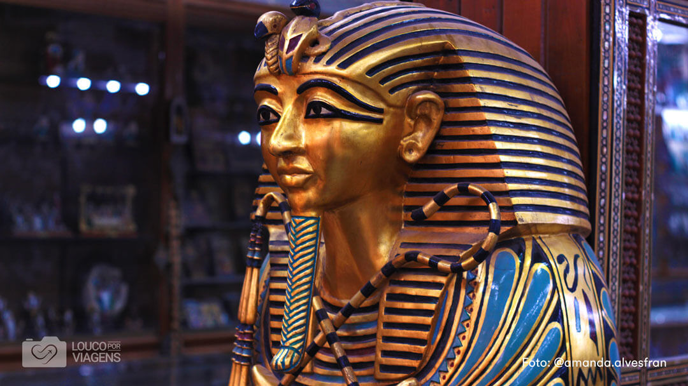

Conhecer o Egito seria maravilhoso. A história da humanidade pulsa nesse país. Suas construções, arquitetura, belezas naturais, tudo ao redor nos traz a reflexão da história de muitos povos da humanidade.
O Egito, um país que liga o nordeste da África ao Oriente Médio, remonta ao tempo dos faraós. Monumentos construídos milênios atrás ficam localizados ao longo do fértil vale do rio Nilo, como as colossais Pirâmides de Gizé e a Esfinge, além do Templo de Karnak (repleto de hieróglifos) e das tumbas do Vale dos Reis, ambos em Luxor. A capital, Cairo, abriga monumentos otomanos como a Mesquita de Muhammad Ali e o Museu Egípcio, com uma coleção de antiguidades.
É praticamente impossível ir até o Egito e não ver de perto o Rio Nilo, um dos rios mais extensos do mundo. Para uma visita ainda mais completa, é possível fazer um cruzeiro pelo Rio Nilo, com duração de 3 a 8 dias, entre as cidades de Luxor e Aswan. O roteiro conta com vistas privilegiadas e visitas guiadas por uma série de pontos turísticos, como as pirâmides, Kom Ombo, Abu Simbel e diversos templos.
| PAÍS | VISITAS |
| França | 100 milhões |
| Espanha | 85 milhões |
| Estados Unidos | 67 milhões |
| Egito | 14,9 milhões |